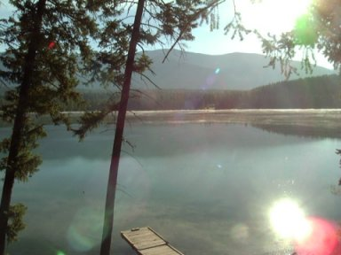
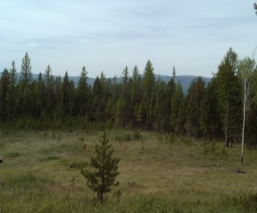
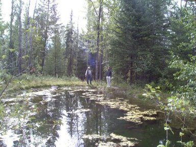
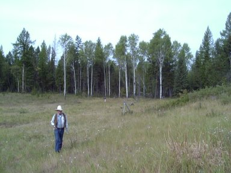
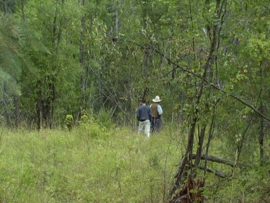
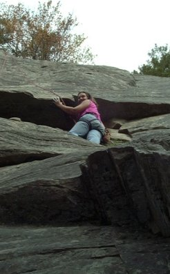

Thursday, September 6
| Back to Home Page | Next Page |
| Eric and I went to
Eric's home town of Eureka, MT in early September. We were there for
the wedding of his brother Lucas to Kristi Hanson. Lucas is sixth of
the seven boys, both in birth order and in getting married. That
leaves only Dallas unwed - and I think he will stay that way for some
time!
Our first day was a quiet, relaxing
day. Most of the visitors coming in for the wedding had not arrived
yet so we had a nice time visiting with Dan and Rose and doing our own
thing. |
|
 |
 |
| We arrived late on Wednesday night and went straight to the cabin on Glen Lake. It is so beautiful there, this shot is looking at the lake from the front porch early Thursday morning. | After a nice breakfast with Dan and Rose, Dan took us up to "the end of the road" to look at a piece of land. It's 5 acres with a pond and a year-round stream. We liked it! |
|
 |
 |
| Dan and Eric looking at the pond. | Walking the meadow - Eric is way back there in the trees. |
|
 |
 |
| Walking the property line. | Later that day Eric and I went rock climbing. This is me taking a breather half-way up a climb. |